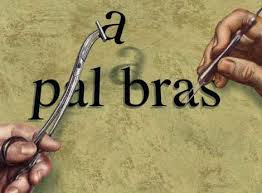

Etimologias
¿Qué es?
La etimología es una rama de la lingüística que se ocupa del estudio del origen de las palabras, así como de sus cambios a lo largo de la historia de la lengua (su derivación). La etimología de una palabra da cuenta de dónde proviene y de cómo se incorporó al idioma, así como su cronología de cambios y adaptaciones, especialmente cuando provienen de otros idiomas o de lenguas muertas (generalmente el latín y el griego antiguo).
La etimología moderna nació en el siglo XIX, junto con la visión que hoy en día tenemos de la lingüística, pero sus raíces datan desde la Antigüedad misma. Filósofos griegos antiguos como Platón (c. 427-347 a. C.) se interesaron en sus obras por el origen de las palabras de su idioma, y poetas como Píndaro (c. 538-438 a. C.) o el romano Plutarco (c. 46-c.120 d. C.) crearon sus propias etimologías ficcionales con fines poéticos o lúdicos.
También hubo importantes tratados medievales sobre del origen de las palabras, como es el caso de Isidoro de Sevilla (c. 556-636) y su célebre Etymologiae (alrededor del año 630). Sin embargo, recién en la época moderna se constituyó una ciencia etimológica, siguiendo un método científico, organizado y comparativo para su estudio.
La etimología, de esta manera, no sólo satisface la curiosidad respecto al origen de una palabra, es decir, en donde figuran sus raíces y qué significaba inicialmente, sino que también señala una cronología o historia de la palabra, que refleja en gran medida la historia del idioma al que pertenece.
Al mismo tiempo, además, contribuye a una comprensión más plena de cómo opera el idioma, lo cual repercute en una mejor ortografía y un más amplio vocabulario.
¿Para que sirven?
El estudio de la etimología resulta de mucha utilidad, dado que favorece procesos mentales como: la memoria, la comprensión y la definición de conceptos. Asimismo, facilita la formación de nuevas palabras, a través de los procesos de derivación, composición y parasíntesis, en los que se retoman raíces y morfemas de origen latino o griego.
Puesto que la etimología también nos permite entender el significado y escritura de las palabras que ya forman parte de nuestra herencia lingüística, nos ayuda a enriquecer nuestro vocabulario y optimizar nuestra ortografía; es decir, tendremos una mejor expresión oral y escrita.
La etimología, además de ayudarnos a relacionar la escritura y el significado de muchas palabras, nos ofrece algunos conocimientos básicos para aprender otros idiomas, sobre todo, aquellos que también provienen del latín, como el francés, el portugués o el italiano.
Como puedes ver, la etimología es una herramienta que puede ayudarnos a tener un adecuado desempeño, tanto en situaciones comunicacionales como de aprendizaje. Y la mayor prueba de ello, la tenemos cuando nos ayuda a entender muchos de los tecnicismos con los que nos vamos encontrando en nuestros estudios y nuestro ambiente laboral
